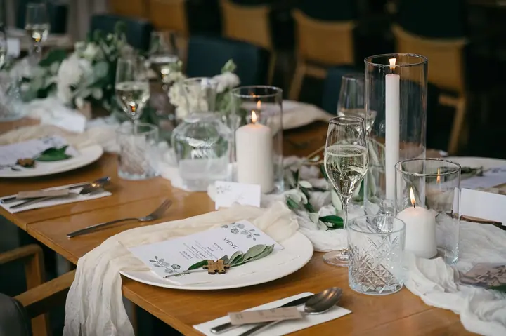

Svatební focení
Od ranních příprav až po večerní party fotím všechno, co se během dne děje, od komorního obřadu po velkou svatbu pod širým nebem. Ceník vám pošlu, až mi napíšete, jak si svatební den představujete.

Jmenuji se Lenka Krejčí a fotím svatby, miminka, těhotenství a rodiny ve Vrchlabí a okolí. Ráda za vámi přijedu na vrcholky hor, k řece, na louku nebo do pohodlí domova.…
Rezervovat termínJako fotograf zachycuji světlo, emoce a jedinečné okamžiky, a vše mezi tím. Focení je pro mě způsob, jak vyprávět příběhy plné života, lásky a opravdového propojení. Fotky nejsou jen obyčejné obrázky. Jsou to malé příběhy o vás, o lásce a o rodině.


Ve všem, co dělám, se snažím být upřímná, laskavá a citlivá k tomu, co potřebujete. Nemám ráda strojené pózy. Chci, abyste se při focení cítili uvolněně, jako by vás fotila kamarádka, a abyste se na fotkách poznali takoví, jací opravdu jste.
Fotím v přírodě kolem Vrchlabí a v Krkonoších, u vás doma nebo ve světlém minimalistickém studiu ve Vrchlabí. Ráda ale přijedu kamkoli v České republice, kde se cítíte šťastní.
Co fotím
Od ranních příprav až po večerní party fotím všechno, co se během dne děje, od komorního obřadu po velkou svatbu pod širým nebem. Ceník vám pošlu, až mi napíšete, jak si svatební den představujete.
Miminko vyfotím u vás doma nebo ve světlém studiu ve Vrchlabí, v klidu a podle jeho tempa. Dečky, košíček i oblečení mám připravené, takže s sebou nemusíte brát skoro nic.
Fotíme beze spěchu ve Vrchlabí a okolí, na místě, které si vyberete sama nebo které vám doporučím. Z klientského šatníku si můžete půjčit splývavé šaty.
Zachytím vás v přirozeném pohybu, když si hrajete s dětmi v přírodě ve Vrchlabí a okolí. Necháme čas plynout a focení bude příjemně strávenou chvílí s vašimi nejbližšími.
Fotografie jsou ilustrační
Postup
Sedneme si spolu nad šálkem kávy nebo online a probereme, co je pro vás důležité a jaké fotky se vám líbí.
Když se domluvíme, potvrdíte termín zálohou. Ten den pak mám v diáři jen pro vás.
Před svatbou vám pošlu krátký dotazník s otázkami na harmonogram, klíčové chvíle a vaše přání, ať vím, na čem vám nejvíc záleží.
Prvních pár snímků dostanete do dvou dnů po svatbě. Kompletní galerie je hotová do 6 až 8 týdnů.
Otázky
Každá svatba je jiná, a tak nabídku pokaždé přizpůsobím vám. Ceník vám pošlu, až mi alespoň rámcově napíšete, jak si svatební den představujete a co všechno chcete mít na fotkách.
U vás doma, kde nám stačí místo u okna, nebo ve světlém minimalistickém studiu ve Vrchlabí. Balíček První vzácné okamžiky za 4 900 Kč zahrnuje 1,5 až 2 hodiny focení a 15 upravených fotografií.
Ideálně mezi 28. a 34. týdnem, kdy už máte krásně zaoblené bříško a ještě se cítíte pohodlně. Když se vám hodí jiný termín, ráda se přizpůsobím.
Ano. Nejčastěji fotím ve Vrchlabí, v Krkonoších a okolí, ale ráda přijedu kamkoli v České republice.